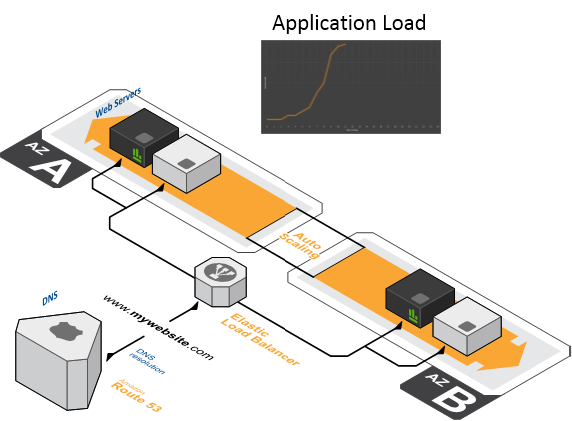

Conception et infogérance d’infrastructures critiques
Des données difficiles à gérer

Avec de l'auto-scaling

Gestions des users, process, droits
Pascal Richier & Morea.fr
Conception et infogérance d’infrastructures critiques
Avec de l'auto-scaling
Gestions des users, process, droits

Pour héberger vos applications Meteor critiques
MOREA vous accompagne dans le design, l'implémentation et l'exploitation de vos infrastructures et applications critiques. Combinez la richesse fonctionnelle des services Amazon Web Services à l'expertise et l'expérience de Morea sur plateformes critiques. Ils font confiance à Morea :